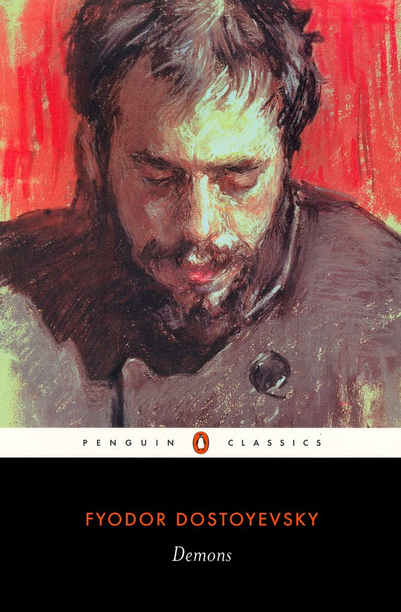

Biography
Fyodor Mikhailovich Dostoevsky (11 November 1821 – 9 February 1881) was a Russian novelist, short story writer, essayist, journalist and philosopher. Dostoevsky's literary works explore human psychology in the troubled political, social, and spiritual atmospheres of 19th-century Russia.
Notable Works
 Crime and Punishment (1866)
Crime and Punishment (1866) The Idiot (1869)
The Idiot (1869) The Brothers Karamazov (1880)
The Brothers Karamazov (1880)- Demons (1872)
 Notes from Underground (1864)
Notes from Underground (1864)